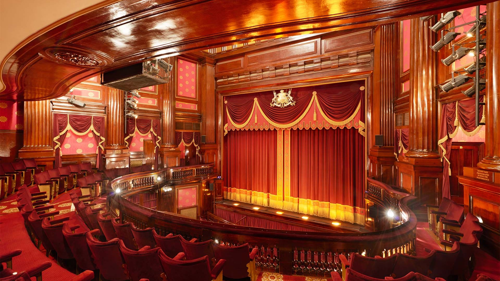

Breaking News: Tech World Stunned by New AI Breakthrough
By Shib
In a groundbreaking leap for technology, researchers have unveiled an advanced AI model capable of outperforming humans in complex reasoning and problem-solving tasks. The system, developed by a global team of scientists, demonstrated unprecedented levels of comprehension, decision-making, and even creativity. Experts say this marks a turning point in artificial intelligence, with potential to transform industries such as education, medicine, and research. However, the breakthrough also raises urgent questions about ethics, job displacement, and the need for updated regulations.
📱 Social Media Trends in 2025
Social media in 2025 is more immersive and personalized than ever before. With the rise of AI-curated content, virtual reality (VR) hangouts, and voice-first platforms, users are spending less time scrolling and more time interacting. Short-form video remains dominant, but now it's paired with interactive layers like real-time polls and virtual gifting. Niche communities and closed-group experiences are growing rapidly, reflecting a shift from public broadcasting to private sharing. As platforms evolve, the focus is shifting toward authenticity, mental health, and meaningful connection over vanity metrics.
🎭 Culture: Theater Makes a Comeback

In a surprising cultural shift, live theater is staging a major comeback across cities worldwide. After years of declining attendance and pandemic-era closures, performance venues are now reporting sold-out shows and record interest. Industry analysts attribute the resurgence to a growing public desire for in-person experiences, as well as innovative productions that merge classic storytelling with modern themes and technology. Many theaters have embraced hybrid models, incorporating digital elements to engage younger audiences. As crowds return to the seats, it’s clear that the stage still holds a powerful place in the modern cultural landscape.